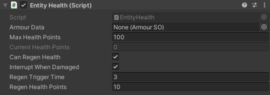

EntityHealth
SWITCH TO SCRIPTINGOverview
The EntityHealth script is designed to oversee the health status of entities within your game. It can be seamlessly integrated
with the ArmourSO scriptable object to provide advanced enhancements
to entity health management.
To utilize the component in your Unity project, proceed by attaching the script to the root object of your character in the Unity Editor,
and then configure the parameters exposed in the Inspector to customize how health should be managed in your game.
Inspector
| ArmourData | Leave this field empty if your entity wears no armour. (See also: ArmourSO) |
| MaxHealthPoints | Maximum health points of the entity. |
| CurrentHealthPoints | Current health points of the entity. |
| CanRegenHealth | Whether or not your entity is able to regen missing health points. |
| InterruptWhenDamaged |
Choose whether or not your entity should stop regenerating health, when they take damage.
Enabling this option will reset the health regeneration timer of the entity upon taking damage. However, this reset only occurs if the entity is already in the process of regenerating health, and does not apply when the regeneration effect is inactive. (See also: EntityHealth.ResetRegenerationTimer for more information) |
| RegenTriggerTime | Time in seconds at which the health regeneration can take effect, if the current health points are not equal to max health points. |
| RegenHealthPoints | How many health points per second the entity should gain, once the regen effect has been triggered. |